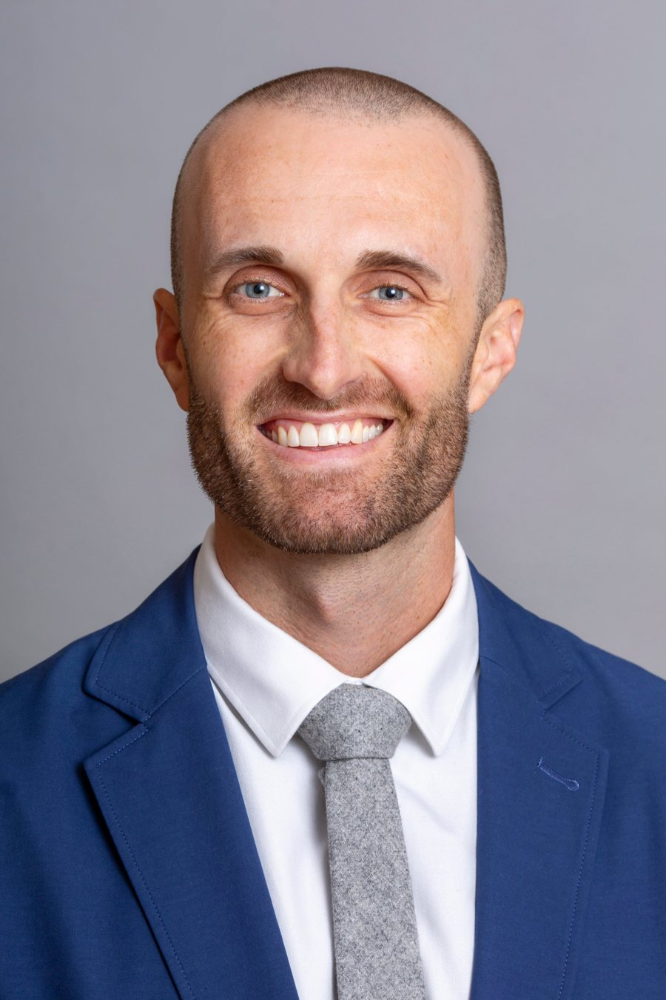

Pediatric Emergency Medicine · Medical Education
Helping learners become the physicians children deserve.
I'm Robbie Daulton, an Assistant Professor of Pediatrics at The Ohio State University College of Medicine and an attending physician in Pediatric Emergency Medicine at Nationwide Children's Hospital. I'm a Columbus native and a Buckeye for life.
My work sits where clinical care and education meet. I'm especially interested in coaching, near-peer and learner-created education, and competency-based assessment, including what it means for a trainee to be ready for unsupervised practice. This portfolio brings together my teaching, scholarship, and reflections as an educator.

Current Position
Assistant Professor of Pediatrics, The Ohio State University College of Medicine
Attending Physician, Pediatric Emergency Medicine, Nationwide Children's Hospital
Training
Pediatric Emergency Medicine Fellowship, Cincinnati Children's Hospital Medical Center (2024–2027)
Pediatrics Residency, Boston Combined Residency Program, Boston Children's Hospital and Boston Medical Center (2021–2024)
Education
MEd, University of Cincinnati (2027)
MD, University of Cincinnati College of Medicine (2021)
BS, Biology and Spanish, magna cum laude, The Ohio State University (2015)